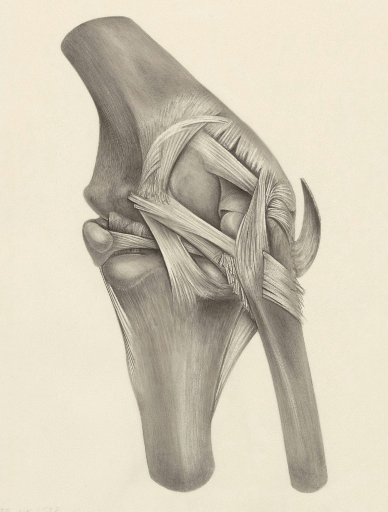
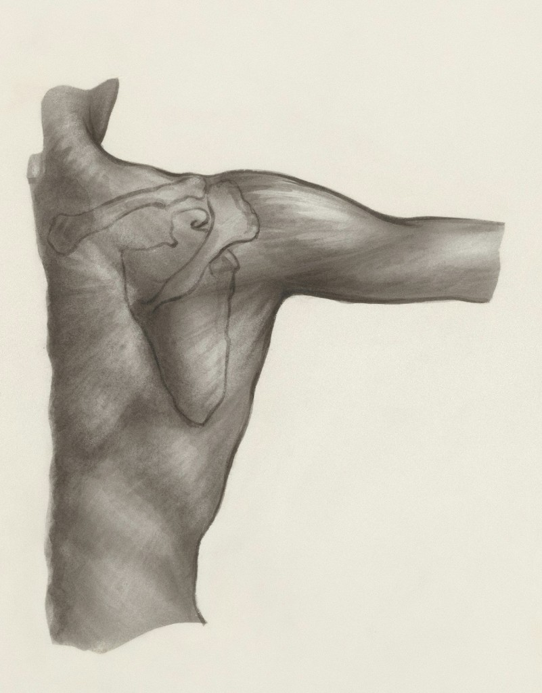
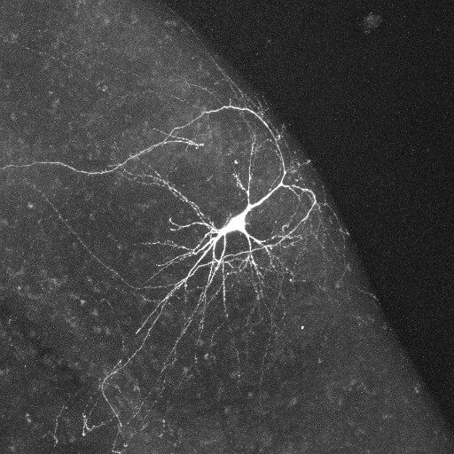
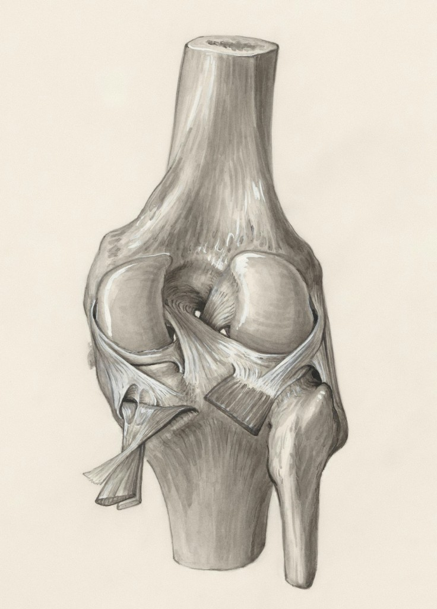

Service
Evidence Summary
Concise summaries of medical records, reports, and expert material — organised around the issues that matter to your case.
Clear, rigorous support for complex medico-legal matters
About
Jacqueline Asher is a solicitor and project specialist based in Taroona, Tasmania, with more than a decade of experience supporting legal teams on complex matters. She holds Bachelor's degrees in Law and Psychology from The Australian National University.
Jacqueline's career spans government legal aid, private practice, and long-term volunteer paralegal work with Legal Services of South Central Michigan. She has worked across criminal, civil, and community legal settings — building a practical understanding of how medical evidence, records, and expert opinion fit into litigation strategy.
Through Jacqueline Asher Medico-Legal Consulting, Jacqueline helps lawyers and their clients navigate dense medical material with clarity: structured chronologies, focused evidence summaries, and briefing materials that support informed decision-making at every stage of a matter.

Services
Service
Concise summaries of medical records, reports, and expert material — organised around the issues that matter to your case.
Service
Detailed, date-ordered chronologies that map treatment, diagnoses, and key clinical events across the record.

Service
Briefing packs and background material to help experts engage efficiently with the facts and clinical context.
Service
End-to-end assistance preparing medical evidence for pleadings, discovery, mediation, and trial.
Sample Product Library
Illustrative examples of deliverable formats. Contact us for tailored work on your matter.
Sample
A sample date-ordered chronology showing how clinical events, investigations, and treatment are presented for review.

Sample
A sample summary demonstrating how voluminous medical records are distilled into issue-focused analysis.
Sample
A sample briefing pack illustrating how background material is structured to support expert review.

Sample documents and templates are provided for illustrative purposes only and do not relate to any real client, patient, or legal matter. Content delivered is not legal advice. All client work is treated as confidential.
To discuss a matter or request a quote, please get in touch.
Email